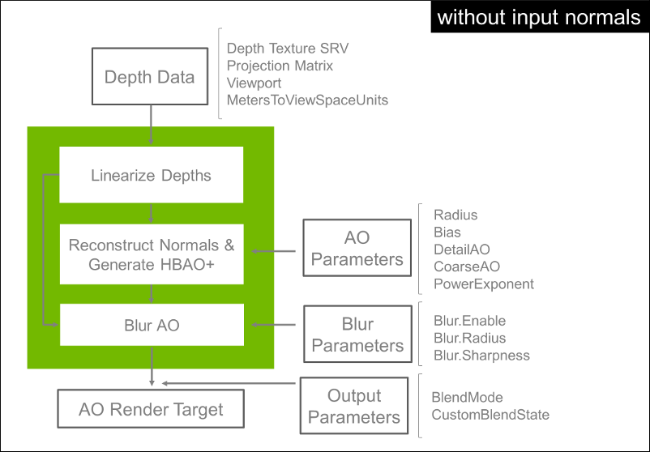
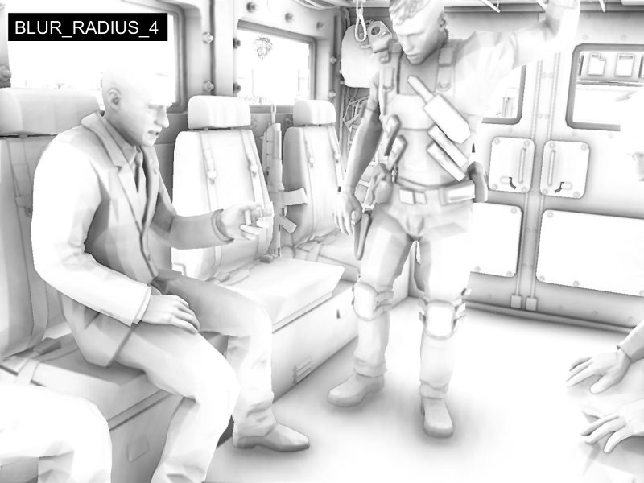
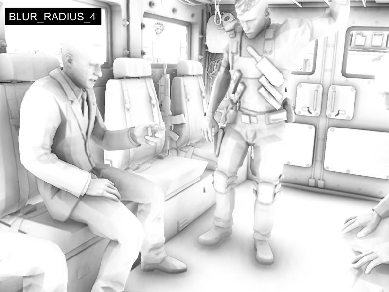

NVIDIA HBAO+ 3.0.¶
Overview¶
HBAO+ is a SSAO algorithm designed to achieve high GPU efficiency. The algorithm is based on HBAO [Bavoil and Sainz 2008], with the following differences:
- To minimize cache trashing, HBAO+ does not use any randomization texture. Instead, the algorithm uses an Interleaved Rendering approach, generating the AO in multiple passes with a unique jitter value per pass [Bavoil and Jansen 2013].
- To avoid over-occlusion artifacts, HBAO+ uses a simpler AO approximation than HBAO, similar to “Scalable Ambient Obscurance” [McGuire et al. 2012] [Bukowski et al. 2012].
- To minimize flickering, the HBAO+ is always rendered in full resolution, from full-resolution depths.
Package¶
doc/—this documentation page.
lib/—header file, import libraries and DLLs, for Win32, Win64, Mac OS X and Linux.
samples/—source for sample applications demonstrating NVIDIA HBAO+.
Getting Started¶
INITIALIZE THE LIBRARY:
GFSDK_SSAO_CustomHeap CustomHeap; CustomHeap.new_ = ::operator new; CustomHeap.delete_ = ::operator delete; GFSDK_SSAO_Status status; GFSDK_SSAO_Context_D3D11* pAOContext; status = GFSDK_SSAO_CreateContext_D3D11(pD3D11Device, &pAOContext, &CustomHeap); assert(status == GFSDK_SSAO_OK); // HBAO+ requires feature level 11_0 or above
SET INPUT DEPTHS:
GFSDK_SSAO_InputData_D3D11 Input; Input.DepthData.DepthTextureType = GFSDK_SSAO_HARDWARE_DEPTHS; Input.DepthData.pFullResDepthTextureSRV = pDepthStencilTextureSRV; Input.DepthData.ProjectionMatrix.Data = GFSDK_SSAO_Float4x4(pProjectionMatrix); Input.DepthData.ProjectionMatrix.Layout = GFSDK_SSAO_ROW_MAJOR_ORDER; Input.DepthData.MetersToViewSpaceUnits = SceneScale;
SET AO PARAMETERS:
GFSDK_SSAO_Parameters Params; Params.Radius = 2.f; Params.Bias = 0.1f; Params.PowerExponent = 2.f; Params.Blur.Enable = true; Params.Blur.Radius = GFSDK_SSAO_BLUR_RADIUS_4; Params.Blur.Sharpness = 16.f;
SET RENDER TARGET:
GFSDK_SSAO_Output_D3D11 Output; Output.pRenderTargetView = pOutputColorRTV; Output.Blend.Mode = GFSDK_SSAO_OVERWRITE_RGB;
RENDER AO:
status = pAOContext->RenderAO(pD3D11Context, Input, Params, Output); assert(status == GFSDK_SSAO_OK);
Data Flow¶
Input Requirements¶
- The library has entry points for D3D11, D3D12 and GL3.2+.
- Requires a depth texture to be provided as input, along with associated projection info.
- Optionally, can also take as input a GBuffer normal texture associated with the input depth texture:
- Can add normal-mapping details to the AO.
- Can be used to fix normal reconstruction artifacts with dithered LOD dissolves.
- But makes the integration more complex. We recommend starting with input normals disabled.
- Optionally, can also take as input a viewport rectangle associated with the input textures:
- Defines a sub-area of the input & output full-resolution textures to be sourced and rendered to.
- The library re-allocates its internal render targets if the Viewport.Width or Viewport.Height changes for a given AO context.
MSAA Support¶
- Requirements
- The input depth & normal textures are required to have matching dimensions and MSAA sample count.
- The output render target can have arbitrary dimensions and MSAA sample count.
- Per-Pixel AO Algorithm
- If the input textures are MSAA, only sample 0 is used to render the AO.
- If the output render target is MSAA, a per-pixel AO value is written to all samples.
- In practice, we have found this strategy to not cause any objectionable artifacts, even when using HBAO+ with TXAA.
HBAO+ Pipeline¶

Occlusion Samples¶
- For each pixel, 32 occlusion samples are taken in a variable-radius disk, with a minimum of 4 full-resolution pixels between the center pixel and the sample coordinates.
- The 8 nearest samples to the center pixel are weighted by the NearAO parameter.
- The other samples are weighted by the FarAO parameter.
Parameters¶
AO Radius¶
- Definition
- For a given AO receiver point P and AO Radius R, sample point S is ignored if ||P-S|| > R
- Impact on search area
- The AO radius is a multiplier for the screen-space search radius, and the number of samples is fixed. So if the AO radius is too large, under-sampling artifacts may appear.

MetersToViewSpaceUnits¶
If you are not sure what to set this value to, you can:
- Set the AO Radius parameter to 1.0 and
- Increase MetersToViewSpaceUnits until the AO looks like it’s being cast up to 1 meter away
MetersToViewSpaceUnits is used internally
- To convert the AO radius parameter from meters to view-space units
- To adjust the blur sharpness parameter
Power Exponent¶
- The PowerExponent parameter controls the darkness of the final AO: FinalAO = pow(AO, PowerExponent).
- Typical PowerExponent values are in the range [2.0, 3.0].
AO Bias¶
- The AO Bias parameter can be used to hide low-tessellation artifacts
- Can also help reducing false-occlusion artifacts near screen borders
- It weights the AO contributions more strongly for samples towards the normal direction
Foreground AO¶
- When this feature is enabled, the screen-space AO kernel radius is:
- inversely proportional to ViewDepth for ViewDepth > ForegroundViewDepth
- uniform in screen-space for ViewDepth <= ForegroundViewDepth (instead of getting arbitrarily large)
- To tune the ForegroundViewDepth parameter
- Start with ForegroundViewDepth = 0.f
- Increase the ForegroundViewDepth to get less closer-scale occlusion on the foreground objects.

Background AO¶
- When this feature is enabled, the screen-space AO kernel radius is:
- inversely proportional to ViewDepth for ViewDepth < BackgroundViewDepth
- uniform in screen-space for ViewDepth >= BackgroundViewDepth (instead of falling off to zero).
- To tune the BackgroundViewDepth parameter
- Start from a very large BackgroundViewDepth value (e.g. the camera’s ZFar)
- Decrease the BackgroundViewDepth to get larger-scale occlusion in the background.


AO Blur¶
- Optional cross-bilateral filter
- To remove jittered-sampling artifacts (noise)
- To hide under-sampling artifacts (banding) & reduce jittering
- 3 Modes
- No Blur
- Blur Radius 2
- Blur Radius 4
 



Integration Time Estimates¶
- Initial integration (for a rendering engineer)
- <1 man-day with no input normals
- 1-2 man-days with input normals
- Initial parameter tuning
- <1 man-hour
- Tuning the parameter should be quick once the input data are correctly fed into the library
- The same HBAO+ parameters may be used globally across the whole game